FreeLLMAPI
On this page
Recommendation: Useful shared utility; reliability beats a “free forever” promise.
On a small screen, swipe horizontally to read every column.
| Snapshot | Assessment |
|---|---|
| Supplied location ID | free |
| Product family | Knowledge infrastructure |
| Implementation stage | Gateway + admin implementation |
| Review date | 2026-09-26 |
| Local state | clean |
Vision and the problem it addresses
Present multiple model providers behind one compatible endpoint, with health-aware routing, quotas, fallback and inspectable usage.
Who needs it: Developers experimenting with many providers; small deployments needing a consistent endpoint and basic cost control.
The moment it becomes useful: A prototype stops on provider limits or every app needs custom provider keys and fallback code.
How it works

This diagram summarizes the inspected design. It is not evidence of a successful end-to-end deployment. For a hands-on journey, use the onboarding guide.
How well it addresses the problem
- routeRequest filters for vision/tools, consumer allowlists, context window and per-provider/key limits before selection.
- Bad key decryption is marked as an error and skipped; sticky routing and custom endpoints are explicit.
- Current source includes embeddings service, consumer controls and tests beyond the README’s original scope.
These are implementation strengths. Repeated use, customer demand and measured business outcomes remain separate questions.
What is missing or unproven
- README says embeddings are unsupported while routes/UI/tests implement them. That contradiction can cause bad integration decisions.
- Provider free-tier availability and limits change; the gateway does not eliminate provider policy, latency or quality differences.
- Embedding fallback must preserve vector-space compatibility, not merely equal dimensions. Pin an embedding family for each collection.
- A gateway concentrates credentials and failures. At-rest encryption requires key backup/rotation and secret-safe logs; SQLite/process counters need deployment-scale evaluation.
Smallest useful next step
Publish a tested compatibility matrix for chat, tools, Responses, vision and embeddings. Give each app a scoped consumer and pin embeddings rather than routing them like interchangeable chat models.
Acceptance exercise: Use mocked providers to force 429, timeout, invalid key, tool mismatch and oversized context. Verify clean exhaustion errors and no credentials in responses/logs. Run live provider checks separately with a budget.
This is a proposed validation exercise unless explicitly recorded as executed in VALIDATION.
Position in the portfolio
Related work: Lumen, Cairn, Spreix Platform, OBSERVE.
Read the overlap and integration decisions before merging features. Shared vocabulary does not guarantee shared IDs, permissions, storage or lifecycle semantics.
On a small screen, swipe horizontally to read every column.
| Reviewer judgment, 1–5 | Score |
|---|---|
| Effort to a credible narrow pilot | 2 |
| Potential breadth and recurrence of the need | 3 |
| Integration, operational and consequence exposure | 3 |
These are ordinal planning judgments, not completion percentages or a commercial valuation. Empty/archive projects should be parked rather than treated as active bets.
Evidence and next reading
Source references and snapshot limits · Developer / Claude onboarding · Portfolio synthesis